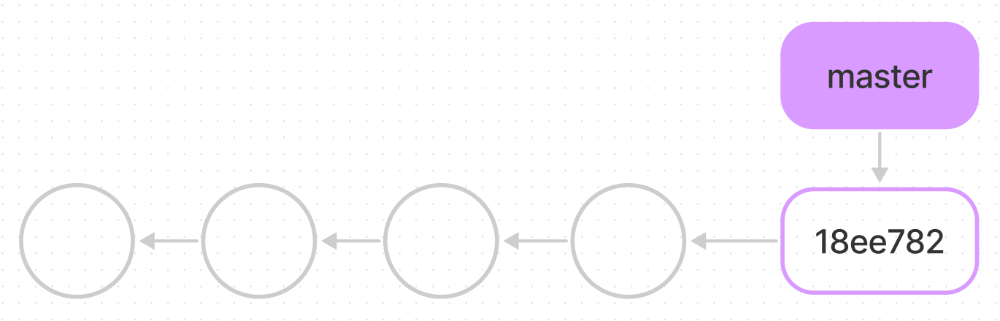

mkdir my-new-working-directory
cd my-new-working-directory
git init
Navigate to directory, where you want the cloned files to be copied. Remember that git clone will automatically create a new working directory named after the repository on the server by default.
git clone https://address.of.repo/git-project-to-copy.git
Modify files at your local working directories.
git add --all
This added modified files to so-called staging area.
This is OPTIONAL, but it is nice to see what are the files to be committed.
git status
git commit -m "Your comments about this commit."
git push origin master
Nowadays the default master branch is named main.
git branch
* master
Here there's only one branch - master - and the asterisk tells us it's the current one.
Create new branch:
git branch new-homepage
and switch that as a current branch you work with:
git checkout new-homepage
In the absence of new commits, these two branches are literally identical.
Now the git branch command would return:
master
* new_homepage
For example to merge branch where contact info has been updated with master:
git checkout master
git merge update-contact-info
Updating 286af1c...885e3ff
Fast-forward
Three different cases of merge can be identified:
The first two cases are handled automatically by Git. Only third needs your input, you must select correct line within conflicting file (and remove all angle bracket conflict markers) using text editor. After that add conflicted file to staging area (git add) and finally do the commit (git commit).
If you initialize a new (empty) project at GitHub and then clone it to your computer, remote is called origin by default.
git push origin master
git pull origin master
If there are other people working with same project pushing changes to code, always pull before you push to make sure your own local copy is up to date. Otherwise you can get push rejection, which has to be fixed with pull request anyway.
To see what remotes are defined:
git remote
origin
You can also specify -v, which shows you the URLs that Git has stored for the shortname to be used when reading and writing to that remote:
git remote -v
origin https://github.com/TimThinner/TimThinner.github.io (fetch)
origin https://github.com/TimThinner/TimThinner.github.io (push)
If you have more than one remote, the command lists them all.
To add a new remote Git repository as a shortname you can reference easily, run git remote add <shortname> <url>